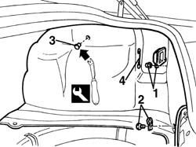
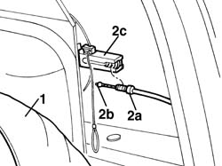
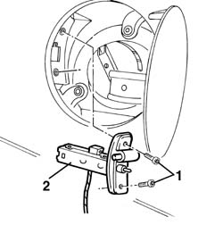
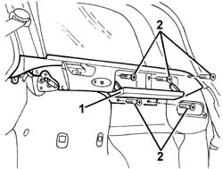
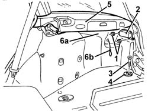
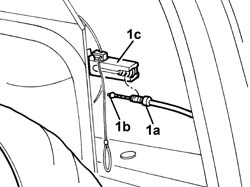

7025C31 fuel filler flap mechanical lock - r r
- Path
- Procedures > 70 FITTINGS > 7025 COMPARTMENT LIDS > 7025C various flaps (exterior) > 7025C31 fuel filler flap mechanical lock - r r
- Kind
- repair procedure (removal / refitting; the operation number is the code)
- Applies to
- all engines; all production periods
- Interactive page
- https://sloeber94.github.io/elrnDB-a156/en/#/3238749
Applies to: all engines; all production periods
 Removing
Removing
 Refitting
Refitting7040B10 load platform (luggage platform) trim - r+r
7040B22 luggage compartment/load platform moulding - r+r
1. Remove the light protection.
2. Undo the bolt and seal.
3. Remove the retaining buttons using the special tool.
 | Name | Country |
|---|---|---|
3 | Scraper blade | 1.823.015.000 |
4. Remove the fuel flap opening safety rod.

Applies to: all engines; all production periods
1. Move the side trim.
2. Disconnect the adjustble mounting (2a) and the retainer for the operating cable (2b) from the fuel flap opening device (2c).

Applies to: all engines; all production periods
1. Open the fuel flap and undo the bolts fixing the lock.
2. Remove the catch.
To facilitate the removal of the lock it may be necessary to undo the fuel cap.

Applies to: all engines; all production periods
Refitting
RemovingRefit the lock, fixing it using the bolts.
Connect the cable retainer and the adjustable attachment to the fuel flap opening device. Adjust the position of the cable via the adjustable mounting for the outer casing.
Refit the side trim.
Place the fuel flap opening safety rod in position.
Check that the door opens and shuts properly.
Fit the retaining button.
Tighten the bolt and seal.
Refit the light protection.
Applies to: all engines; all production periods; only with equipment: Station Wagon
Removing
Refitting7040B22 luggage compartment/load platform moulding - r+r
7040B15 (One), rear side trim mounting BRACKET left or right - R.R .
1. Working on the right side of the load carrying compartment, open the compartment.
2. Undo the rear bolts fixing the side support.

Applies to: all engines; all production periods; only with equipment: Station Wagon
1. Unscrew the nuts.
2. Remove the light protection.
3. Unscrew the bolt.
4. Remove the mounting ring.
5. Move the blind side support slightly.
6. Move the side trim (6a) slightly and release it from the opening cable (6b).

Applies to: all engines; all production periods; only with equipment: Station Wagon
1. Disconnect the adjustable mounting (1a) and the retainer for the operating cable (1b) from the fuel flap opening device (1c).

Applies to: all engines; all production periods; only with equipment: Station Wagon
1. Open the fuel flap and undo the bolts fixing the lock.
2. Remove the catch.
Applies to: all engines; all production periods; only with equipment: Station Wagon
Refitting
RemovingRefit the lock, fixing it using the bolts.
Connect the retainer for the cable and the adjustable mounting to the fuel flap opening device. Adjust the position of the cable via the adjustable mounting for the outer casing.
Reposition the side trim after having placed the fuel flap opening safety cable in position.
Check that the door opens and shuts properly.
Reposition the blind side support.
Tighten the screws.
Position the mounting ring and fix it using the bolt.
Position the light protection and fix it using the nuts.
7040B15 (One), rear side trim mounting BRACKET left or right - R.R .